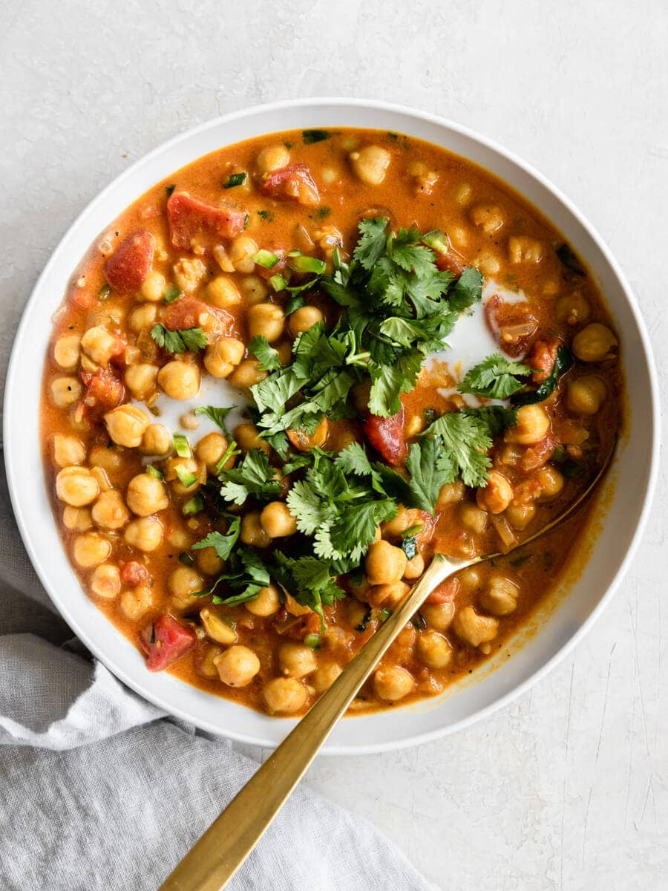

Home
Coconut Chickpea Curry

Description
This savory, tomato-y curry melts in your mouth and is so, so healthy for you. Topped with cilantro/coriander
leaves, it elevates the dish to a heavenly level. It can be eaten alone (as in by itself, please share this with
others) or with naan, chapati, or rice.
This coconut chickpea curry puts tomato basil soup to shame--just don't call it a soup, or a woman named Swasthi
will appear in your kitchen to slap you upside the head with a chapati. This dish will tempt you to grab seconds
and thirds, so you have been warned: eat with moderation!
Ingredients
- 2 tbsp oil
- 2 15-oz cans of chickpeas, rinsed
- 12 oz finely-chopped red onions
- 1 tbsp finely-chopped fresh ginger
- 1 tbsp finely-chopped fresh garlic
- 12 oz fresh tomato puree (or 8 oz canned/bottled puree)
- 1 1/2 tsp salt (adjust to taste)
- 1 tsp Kashmiri red chili powder or mild smoked paprika (adjust to taste)
- 1/4 tsp turmeric
- 1 tsp cumin powder
- 1 tbsp coriander powder
- 1 tbsp curry powder (or 1 tsp garam masala/pav bhaji masala)
- 1/2 to 1 tsp garam masala
- 1 tsp sugar
- 6 oz water (see Notes)
- 10 oz coconut milk
- 1/4 cup coriander leaves/cilantro
- lemon juice to taste
Steps
- Heat a large pot (e.g. caldero or Dutch oven) on medium for about 5 minutes.
- Add the oil to the pot and heat it until it begins to gently smoke.
- Add the chopped onions and cook until golden and translucent, stirring every 2 minutes to stop from burning
or sticking
to pot.
- Turn heat down slightly, then add ginger and garlic. Saute for 1 to 2 minutes until their pungent aroma
fills your
nostrils.
- Lower the heat to a simmer. Add salt, Kashmiri red chili powder (or mild smoked paprika), turmeric, cumin
powder,
coriander powder, and curry powder (or garam masala/pav bhaji masala). Give everything a quick stir, taking
care not to burn the spices.
- Saute the spices until the room is filled with their strong aroma.
- Turn the heat back up to medium, then add the tomato puree. Cook for 4 to 5 minutes if using fresh puree, or
for
2 minutes if using canned puree.
- Add the chickpeas, water, and coconut milk. Mix everything well.
- Simmer on medium-low heat for 10 minutes, stirring every few minutes to prevent the curry from burning to
the pot. Then, turn the heat down to low and simmer for an additional 10 minutes, stirring every few
minutes. Cook until the chickpeas have a melt-in-your-mouth texture and have absorbed all the flavors. If
they aren't soft or taste bland, cook for longer, checking in 5-minute intervals, adding more water if
needed until the chickpeas are done.
- Turn the heat off and add the garam masala and sugar. Taste the curry to determine if more salt or garam
masala is needed.
- Cover the curry until served to retain the flavors.
- After about 5 to 10 minutes, when the temperature has cooled down a bit, garnish with fresh-chopped
coriander leaves/cilantro. Squeeze in some lemon juice. Eat alone or serve over: rice; quinoa and millets;
or with
roti, naan, chapati, or any other delicious flatbreads.
Notes
- You can optionally add 10 to 12 fresh curry leaves to the hot oil before adding the onions.
- You can use 1 cup dried chickpeas instead of canned. For this, rinse and soak them overnight in water.
Later, drain the water and rinse well. Then, add them with 1 1/2 cups water to an Instant Pot pressure
cooker on the High Pressure Cook setting for 17 minutes. This will yield the perfect texture every single
time.
- If your canned chickpeas are undercooked and hard, boil them for a while.
- You can use aquafaba (chickpea stock, either from fresh-cooked or canned) in place of water.
- You can really use as much coconut milk as you'd like; just keep in mind how coconut-y you want the curry to
be. It will, of course, dilute the curry and won't be as spiced.
- If you don't like coconut milk, you can use water instead. However, you'll have to decrease the amount of
spices slightly (the amount is small enough you can eyeball it).